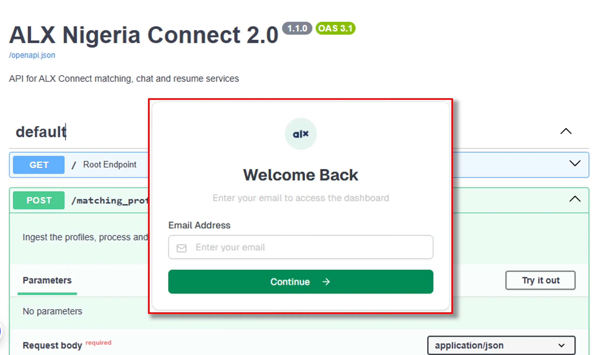
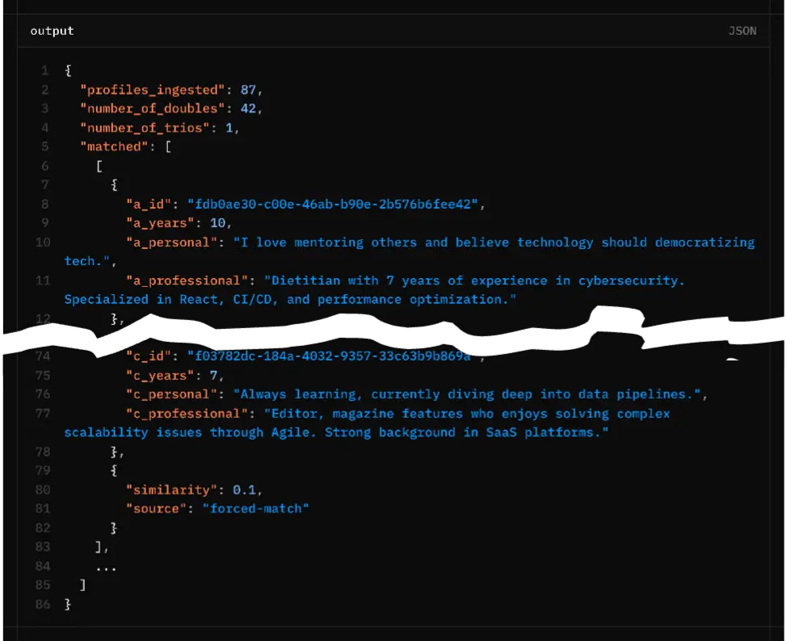

Ndcharles Nweke
Data Science & Analytics | IT Operations
A data generalist with experience in IT operations, and everything business automations. My interest is in real-life applications of data to business and everyday problems.
Let's Connect
LinkedIn | Twitter | Blog |
View my Resume
Building an AI-Powered Community Matching Engine

Before there was an architecture diagram, a matching algorithm, or a single API endpoint, there was a problem I saw even before anyone could notice it.
The ALX Nigeria community was growing, pretty fast. What started as a network of learners quickly became tens of thousands of graduates domiciled in every state of Nigeria, each on a different path, at a different stage, with different goals. And yet, they all had one thing in common: the need to connect with the right people.
Not just anyone, but people who understood their journey.
At such growth rate, meaningful connections became harder to facilitate. I thought of a solution that connected people. These early attempts relied on manual processes, spreadsheets, bulk emails, and meeting coordination, which proved the value of structured matching but quickly became unsustainable.
The challenges were consistent: mismatched pairings, no-shows, limited feedback, and increasing operational overhead with each cycle.
It became clear that this wasn’t just a coordination issue, it required a purpose-built system.
What we needed was an engine that could intelligently match people, automate the interaction flow, and scale without manual intervention.
This document outlines how that system, ALX Connect, was designed and built.
Building ALX Connect
Early-career professionals often struggle to find the right guidance, mentors, and opportunities. ALX Connect solves this by enabling users to discover and connect with other members of the community based on skills, experience, and career interests.
ALX Connect is a networking and mentorship discovery platform built for the ALX community. It helps learners and alumni connect based on skills, experience, and career interests, creating a collaborative ecosystem where knowledge and opportunities are shared.
ALX Connect is unique through two key features: an automated matching system and an automated feedback system. The platform automatically matches community members based on shared skills, experience, and career interests. Furthermore, the feedback system is designed not only to improve the platform but also to help identify and highlight emerging mentors within the community who consistently offer valuable guidance.
By combining machine learning, data-driven recommendations, and automated feedback mechanism, ALX Connect helps community members:
- Build meaningful professional relationships
- Access mentorship and career guidance
- Navigate early careers in technology
Ultimately, ALX Connect transforms the ALX community into a living network of knowledge, support, and opportunity, helping talented individuals grow and succeed in the global workforce. And the best part, this requires little effort from the team.
Implementation Techniques
The implementation is in two versions: Cloud Run (full semantic model) and Render (lightweight TF-IDF).
Text Embedding
Sentence Transformers (all-MiniLM-L6-v2), a pretrained transformer model that generates dense semantic vectors, was chosen for its balance of speed and accuracy, and its 384-dim output aligns well with the target dimension. For the Render version, TF-IDF + TruncatedSVD was used in place of the sentence transfromer (Render has memory constraints preventing loading large transformer models). This combination converts text to sparse term-frequency vectors then reduces it to 384 dimensions. It captures keyword overlap but, unlike sentence transformers, lacks deep semantic understanding.
Similarity Index
HNSWlib (Hierarchical Navigable Small World): a dedicated approximate nearest neighbour index optimised for cosine similarity was used as it has a simple API and good performance for my use case. Sklearn was also implemented as a fallback if HNSWlib fails (this was implemented for Render). Slower but guarantees exact nearest neighbours.
Matching Strategies
The matching system uses a multi-stage similarity and clustering pipeline designed to maximize high-confidence matches while ensuring every profile is paired. The process progressively relaxes constraints to maintain match quality before falling back to forced pairing strategies.
The system progressively moves through four stages:
- Mutual Nearest Neighbour Matching (highest confidence)
- Greedy Matching from Top-10 Neighbours
- Cluster-Then-Match using K-Means
- Forced Matching for remaining profiles
This layered approach ensures that high similarity matches are prioritized yet ensuring complete coverage for all profiles.
- Mutual Nearest Neighbour Matching: The system first computes cosine similarity across all profile embeddings. Each profile identifies its closest neighbour (Top-1) based on similarity.
A pair is considered a Mutual Nearest Neighbour if:
- Profile A’s closest match is B
- Profile B’s closest match is A
These matches are considered high-confidence pairs because both participants are each other’s strongest similarity signal. This stage is executed first to capture the most reliable matches in the dataset.
-
Greedy Matching from Top Neighbours: After mutual pairs, there are still many possible good matches. A greedy approach maximises overall similarity among the remaining profiles without requiring exhaustive search. Once a match is made, both profiles are removed from the pool. This step helps capture strong but non-mutual matches that were missed in the first stage.
-
Cluster-Then-Match Strategy: This stage handles the leftovers that were not matched in the previous stages. These profiles are typically less similar to anyone, so we try to find any reasonable groupings using K-Means clustering. Clustering provides a coarse grouping based on overall similarity, which then allows fine‑grained pairing within each group. Unlike centroid-based assignment, this method matches profiles based on direct pairwise similarity, preventing centroid bias. Profiles that remain unmatched within clusters are moved to a global singleton pool.
- Forced Matching: To ensure complete coverage, profiles that remain unmatched after clustering are collected in a singleton list which are then matched using a fallback strategy.
Singleton represent cases where similarity scores are too low, cluster structures prevented pairing or odd profile counts occurred
Rules:
- Singletons are paired sequentially.
- Each forced pair is assigned a low similarity score (0.1).
- Matches are labeled with the tag
forced-matchto distinguish them from similarity-based matches.
If an odd number of singletons remains, the final singleton is added to an existing pair forming a trio group. This guarantees no profile remains unmatched.
System Flow
The process for generating profile embeddings and identifying similar profiles involves several distinct, sequential steps, ensuring robust similarity matching and detailed output reporting.
-
Validate the input to ensure each profile includes an
id,personal_summary,professional_summary, andyears_experienceand in the right format. This validation is performed using Pydantic within FastAPI.class ProfileInput(BaseModel): id: str personal_summary: str professional_summary: str years_experience: int - Combine the profile inputs to generate embeddings before L2-normalize (this helps improve the stability and performance of subsequent similarity search coming next).
- Create HNSWlib index from all profile embeddings.
- Retrieve top-50 neighbours for each profile (including self).
- The final list of groups (pairs or trios) is transformed into a JSON-compatible format for backend consumption. For each group we include the original
profile data(id, years_experience, personal_summary, professional_summary (prefixed with a_, b_, and optionally c_)),similarity(the similarity score of the match) andsource(one of “nearest”, “greedy”, “cluster”, “forced-match”). The output also includes number of doubles and the number of trios for monitoring group composition.

Memory Management
Throughout the pipeline, memory usage is logged using psutil. After the matching completes, gc.collect() is called explicitly to free temporary objects (e.g., large similarity matrices). This is important to ensure that memory size doesn’t outgrow available resources. The consequence is constant shutdown on memory-constrained platforms like Render or increased platform costs on auto-scale infra like Cloud Run.
Limitations and Challenges
A lot of trade-offs were made to ensure the model runs on the free-tier of Render and Cloud run at first.
- Model Size: SentenceTransformer cannot be used on OnRender due to memory caps.
- HNSWlib Tuning: parameters (M, ef_construction) affect recall vs. memory/time – current values are a starting point and may need optimisation for larger datasets.
- TF-IDF lacks synonym handling and context, leading to less accurate matches when profiles use different wording. It was preferred for the Render version due to resource constraints.
- We have edge cases for odd number of profiles forcing a trio (the code attempts to avoid singles). The forced-match similarity is arbitrarily low but ensures that no one is left unmatched.
- Cold Start problem: First visit on Cloud Run or Render requires about 50-seconds wait time for startup
Future Improvements
This was built for a maximum of 10k profiles and so far tested with about 1k. Scaling it beyond that would require further testing to ensure fit for purpose. You might also want to consider a few extra things during scale:
- Profiles are matched once per cycle and these profiles change per cycle, thus implementing caching embeddings/indexes to avoid recomputation for repeated runs wasn’t a consideration
- Consider different kind of sentence transformer for better embedding quality
- You might want to add more sophisticated clustering (e.g., DBSCAN) to better handle uneven cluster sizes.
- LLMs can validate matches. I created a v1 that evaluates the compatibility between matched profiles. This acts as continuous QA where random samples from different match types (nearest, greedy, cluster, forced) are sent to an LLM. The LLM assesses the match quality based on predefined rubrics providing an automated evaluation of the matching algorithm’s output quality.
Conclusion
ALX Connect stands as proof that powerful community tools can emerge from understanding a problem deeply and applying technology thoughtfully. It’s a foundation designed not just to match profiles, but to scale the very human need for connection and mutual growth. The real measure of its success isn’t just in the lines of code or the choice of library, but in the sustained, meaningful interactions it enables within a vibrant community.
[View my GitHub profile] | [Read the Blog]